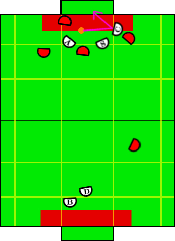

Play: Touch Shoot
Description:
The continuation of the cross-crease pass when the creator finishes the
receive and shot on goal.
Illustration:

Positions Present:
- Blocker
- Defender
- Aggressor
- Creator
- Special Op Creator
Position Strategies:
Blocker + Defender:
Work together cutting down shots in same fashion as described in Loose Defense.
Blocker: TandemBlockerSkill
Defender: TandemDefenderSkill
|
Aggressor + Special Op Aggressor:
Aggressor and Special Op Aggressor setup for rebound from kicked ball.
Aggressor sets up on opposite side of field than the creator, special op on
same side of the field as the creator.
Aggressor: TandemReboundOffenseSkill
Special Op Aggressor: TandemReboundOffenseSkill
|
Creator:
Creator moves perpendicular to ball velocity vector, maintaining optimal
angle to receive pass and immediately kick it into open goal.
Creator: TouchShootSkill
|
Transitions:
|
Once the creator has kicked the ball OR the ball is between the creator and the
goal OR the play timer has timed out. |
Position Switching:
- Aggressor, SpecialOpCreator
|
- If creator on left side of field, keep aggressor to the right of the special op
- If creator on right side of field, keep aggressor to the left of the special op
|
|